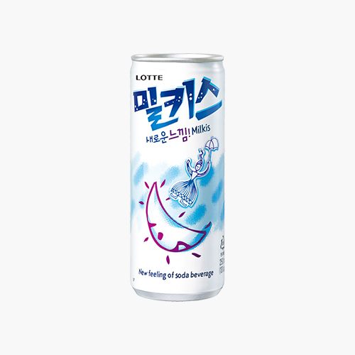

밀키스 Milkis
밀키스(Milkis)는 1989년 4월부터 시중에 판매된 롯데칠성음료의 청량 음료이다. 옥수수, 당밀, 설탕, 탄산수 등 탄산음료의 기본 재료에 우유를 첨가한 것이 특징이다.
최종 업데이트

밀키스는 어떤 브랜드인가
밀키스는 롯데칠성음료가 1989년 4월부터 판매해 온 청량 음료이다. 탄산음료의 기본 재료인 옥수수, 당밀, 설탕, 탄산수 등에 우유를 첨가한 것이 특징이며, 원재료명에는 물, 액상과당, 설탕, 탈지분유, 탄산가스, 구연산이 적혀 있다.
캔 포장에는 "새로운 느낌"이라는 문구가 적혀 있다. 1990년대 중반까지는 매우 인기 있는 상품이었으나 지금은 생산량이 어느 정도 줄어들었다.
그래도 아직까지 시중에서 판매되고 있으며, 250ml(캔), 500ml(페트), 1.5L(페트) 등의 용량으로 나와 있다. 2000년부터는 한국에서 러시아로 수출을 시작했으며, 독특한 맛과 디자인 덕분에 러시아에서 인기를 누린 것으로 분석된다.
밀키스는 어떻게 시작되고 성장했나
밀키스의 브랜드 아이덴티티는 무엇인가
탄산음료의 기본 재료에 우유를 첨가한 롯데칠성음료의 청량 음료로, 러시아 수출과 무탄산 제품, 아이스크림으로도 이어진 브랜드이다.
밀키스의 대표 제품과 서비스는 무엇인가
밀키스는 옥수수, 당밀, 설탕, 탄산수 등에 우유를 첨가한 청량 음료이다. 국내에서는 250ml(캔), 500ml(페트), 1.5L(페트) 등으로 판매되며, 2010년 7월 디자인을 리뉴얼하면서 바나나 맛과 오렌지 맛을 내놓았다.
2016년 10월에는 탄산을 넣지 않은 무탄산 워터타입인 밀키스 무스카토를 내놓았다. 아이스크림으로도 만들어져 2018년 4월에는 막대바 형식, 7월에는 튜브 형식의 밀키스 아이스크림이 출시되었다.
원재료명에는 물, 액상과당, 설탕, 탈지분유, 탄산가스, 구연산이 적혀 있으며, 바나나 맛에는 바나나 농축액과 바나나향이 포함된다.
밀키스는 지금 어떤 상태인가
1990년대 중반까지는 매우 인기 있는 상품이었으나 지금은 생산량이 어느 정도 줄어들었다. 그럼에도 2019년 6월부터 시중에서 판매 중인 상품으로 기재되어 있다.
2010년 바나나 맛과 오렌지 맛, 2016년 무탄산 제품, 2018년 아이스크림 출시로 제품군을 넓혀 왔다.
밀키스 로고는 어떻게 변해왔나
자주 묻는 질문
밀키스는 언제 설립되었나요?
밀키스는 1989년 설립되었습니다.
밀키스는 어떤 산업의 브랜드인가요?
밀키스는 식음료 분야의 브랜드입니다.
밀키스의 브랜드 아이덴티티는 무엇인가요?
탄산음료의 기본 재료에 우유를 첨가한 롯데칠성음료의 청량 음료로, 러시아 수출과 무탄산 제품, 아이스크림으로도 이어진 브랜드이다.
밀키스의 대표 제품은 무엇인가요?
밀키스는 옥수수, 당밀, 설탕, 탄산수 등에 우유를 첨가한 청량 음료이다.
밀키스는 현재 어떤 상태인가요?
1990년대 중반까지는 매우 인기 있는 상품이었으나 지금은 생산량이 어느 정도 줄어들었다.
밀키스의 공식 웹사이트는 어디인가요?
밀키스의 공식 웹사이트는 http://company.lottechilsung.co.kr/eng/product/softdrink.jsp?nPos=020201 입니다.
출처와 검증
밀키스 관련 참고: 공식 웹사이트 · 위키데이터 Q908679 · 한국어 위키백과 · 영어 위키백과. 브랜드명은 한글과 원어를 함께 표기하되 데이터에 없는 표기는 만들지 않습니다. 기원 국가·설립연도는 검수된 정의문에서 확인된 값을 우선하고, 없을 때만 공식 웹사이트 URL이 일치하는 위키데이터 개체의 값을 씁니다. 위키데이터 값은 2026-11-06 기준입니다.